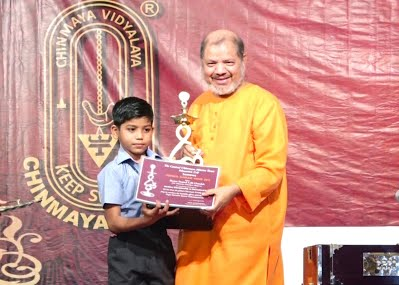

Campus life
Chinmaya vidyalaya
Swami Chinmayananda was on his first global tour. The queen of Vengunad, Radha Devi, was the president of Chinmaya Mission, Kollengode in Kerala. There was a request to start a school. A part of the palace was offered and so the Chinmaya Education Movement (CEM) was started with the inauguration of a nursery school on 20 May 1965, with royal patronage by Shri KPS Menon (ex-ambassador to Russia). The Chinmaya nursery school grew and Swami Chinmayananda inaugurated the primary school on 17 June 1969, in a separate building near the palace. It has over time become a higher secondary school, with 555 students, a staff of 37, and structure and infrastructure.
In the second batch we produced the district topper Most of the students the third batch scored 80 and 90+ And now we are continuing with great expectations from our fourth and recent batch.Students get good guidance, arts is given equal importance as science.

Smart Class:
a digital initiative pioneered by Educomp makes learning visually appealing to the students and thereby enhances their academic performance.
School achievments

Future 80 schools will success
The Movement is one of Chinmaya Mission's most valuable contributions top society. From its humble beginnings on May 20, 1965, in Kollengode, Kerala

Center of excellence for students
The Vidyalaya has a Physics Lab with all the necessary instruments required for both the Secondary and Senior Secondary sections. Our lab can be utilized by more than 30 students at a time. The Lab provides for all equipments as required under the affiliation rules..

Sports & games
The school has a standard football court with 200m Track, Basketball and volleyball courts, Indoor Table Tennis and badminton court, specific yoga area..
news about environment
-
New school canteen

The Canteen was renovated this year and the extended space accommodates more number of students. The Students’ council took up the innovative project of beautifying the walls of the canteen hall by displaying their artistic talents aesthetically. Times to time modifications are brought in to provide the variety in the canteen menu. The mess committee works diligently to give useful feedback and suggestions in the content of the menu offered in the canteen. Cleanliness of the highest standards is maintained in the canteen which is frequently inspected by the authorities so that there is no compromise regarding the nutrient value of the food cooked and also in matters of neatness and hygiene observed by the canteen staff.
-
Chinmaya Vidyalaya New Awards
Recognises and encourages excellence in management, principals, staff, and students through awards. The awards encourage them to maintain and further their good work and inspire them to become role models. The Chinmaya Vision Award is for the Vidyalayas that best implement CVP; The Chinmaya Gaurav Award, - meaning the pride of Chinmaya Institutions - is to recognise and honour students, teachers, and principals for successfully representing the school in academic, sports and cultural activities. This award is given to state-level, national and international achievers. Started in 2001 and presented by Swami Tejomayananda, the awards are a means to recognize schools, individuals, and their families, and encourage more stars to shine in the national and international space.
Famous Person

Swami Chinmayananda Saraswati
Swami Chinmayananda Saraswati
Swami Chinmayananda Saraswati, commonly referred to as Swami Chinmayananda, (born Balakrishna Menon; 8 May 1916 – 3 August 1993) was a Hindu spiritual leader and a teacher who inspired the formation of Chinmaya Mission, a worldwide nonprofit organisation, to spread the knowledge of Advaita Vedanta, the Bhagavad Gita, the Upanishads, and other ancient Hindu scriptures. From 1951 onward, he spearheaded a global Hindu spiritual and cultural renaissance that popularised the religion's esoteric scriptural texts, teaching them in English all across India and abroad..
About

Swami Swaroopananda
Swami Swaroopananda
In an era rife with scepticism and confusion about matters spiritual, Swami Swaroopananda is a rare voice that blends authenticity with accessibility; theory with self- practice; logic with heart.
Formerly the Regional Head of Chinmaya Mission Australia, United Kingdom, Middle East, Africa and Far East, and presently Chancellor of the Chinmaya Vishwavidyapeeth Trust (University for Sanskrit and Indic Traditions) and Chairman of the Chinmaya International Residential School in Coimbatore, South India, Swami Swaroopananda has now been bestowed by Swami Tejomayananda the privilege to also serve as the Head of Chinmaya Mission Worldwide.
About

Swami Tejomayananda
Swami Tejomayananda
Swami Tejomayananda Saraswati, also known as Guruji and born Sudhakar Kaitwade, is an Indian spiritual leader. He was head of Chinmaya Mission from 1994–2017, until he was succeeded by Swami Swaroopananda in 2017
About